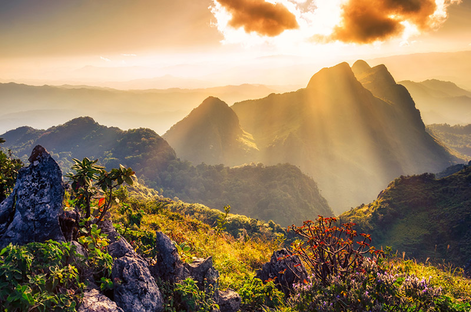

สัมผัสธรรมชาติอันบริสุทธิ์
ดอยหลวงเป็นหนึ่งในยอดดอยที่งดงามและเป็นจุดหมายปลายทางยอดนิยมของนักเดินป่า ที่นี่มีอากาศบริสุทธิ์และวิวที่สวยงามตลอดทั้งปี
สถานที่น่าสนใจ
- เส้นทางเดินป่าดอยหลวง
- ชมวิวพระอาทิตย์ขึ้น
- น้ำตกใกล้เคียง
- พืชพรรณและสัตว์ป่านานาชนิด